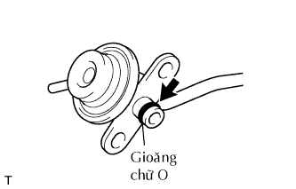

BỘ ĐIỀU ÁP NHIÊN LIỆU > LẮP |
| 1. LẮP BỘ ĐIỀU ÁP NHIÊN LIỆU |
|  |
Bôi một lớp mỏng dầu hoặc xăng lên gioăng chữ O mới và lắp nó vào bộ điều áp nhiên liệu.
Lắp bộ điều áp nhiên liệu bằng 3 bulông.
Lắp ống nhiên liệu số 2.
Lắp ống chân không.
| 2. LẮP ỐNG NỐI NẠP KHÍ |
Lắp ống nối nạp khí bằng 2 bu lông, và xiết chặt 2 kẹp ống.
| 3. NỐI CÁP ÂM VÀO CỰC ÂM ẮC QUY |
| 4. TIẾN HÀNH THIẾT LẬP BAN ĐẦU |
Tiến hành thiết lập ban đầu (Xem trang Kích chuột vào đây).
| 5. KIỂM TRA RÒ RỈ NHIÊN LIỆU |
Nối máy chẩn đoán với giắc DLC3.
Bật khoá điện ON.
Bật công tắc chính của máy chẩn đoán ON.
Hãy chọn thử kích hoạt và truy nhập và menu sau: Powertrain / Engine and ECT / Active Test / Control the Fuel Pump / Speed.
Kiểm tra rò rỉ nhiên liệu.
Kiểm tra rằng không có rò rỉ nhiên liệu trong hệ thống nhiên liệu sau khi tiến hành bảo dưỡng.